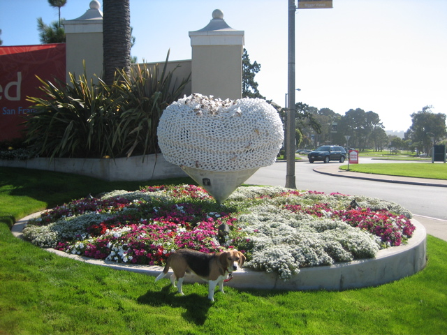

<--Previous Up Next-->

The Tempest Cozy
This Hearts in San Francisco entry by Adele Louise Shaw is covered (underneath the big plastic bees and the knitted cozy) with antique printings of Shakespeare, thus (we suppose) the name. It's at the Villas Parkmerced, at 19th Avenue and Crespi.